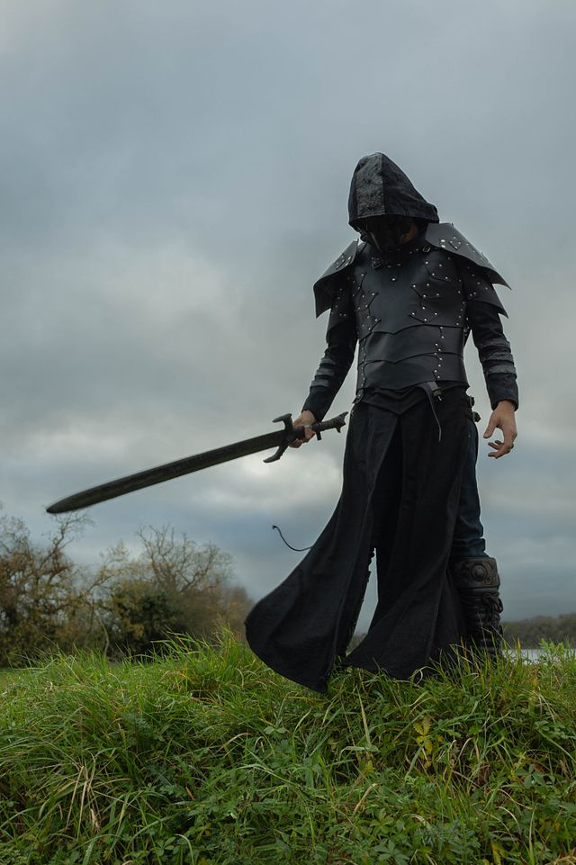
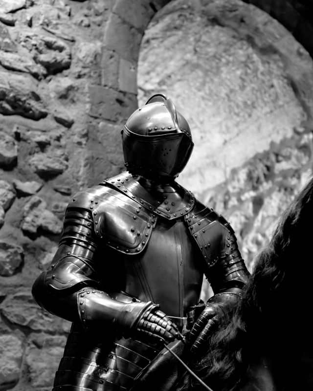

Chapter 1: The Pie
The night Lord Ashmar's tax collectors burned the lower Drown, Wick Talon was three streets over, stealing a pie.This would become, in later years, a point of some embarrassment for the historians of the realm, who preferred their revolutionaries to have witnessed their formative tragedies with grim, meaningful eyes. Wick had witnessed his with a mouthful of stolen currant pie and had, by his own account, "absolutely no regrets, the pie was incredible."
The Drown burned anyway. Half the district went into the black water that gave the place its name, and Wick — who had lost his mother to fever, his father to the river, and his eyebrow to a dog he still maintains started it — found himself, at eleven years old, entirely alone with nothing but a stolen pie tin and a talent for lying so well that grown men occasionally thanked him for cheating them.
He did not weep. He did not swear vengeance beneath a blood moon. He found a merchant caravan the next morning, told them he was the orphaned nephew of a minor lordling (a lordling he'd invented on the spot, complete with a tragic backstory he'd steal wholesale from a bard's ballad), and rode out of the ashes eating someone else's breakfast.
That was the beginning of it. Not a prophecy. Not a chosen bloodline. Just a boy who'd learned that in a world obsessed with taking itself very, very seriously — oath-bound knights, grieving kings, prophets muttering about winters that never seemed to end — nobody ever suspected the one who was laughing.
Chapter 2: The Envoy Who Didn't Exist
Twelve years later, Wick Talon stood in the receiving hall of House Ashmar itself — the same house whose men had burned his home — wearing a dead diplomat's coat and introducing himself as "Special Envoy Talonis of the Free Cities," a title that did not exist, representing a treaty that did not exist, at a negotiation over a war he had, three weeks earlier, quietly started himself for exactly this purpose.
"You understand," said Lord Ashmar's steward, a humorless man named Corvin who had not smiled since the Second Age, "that the fate of six thousand soldiers rests on this parley.""Six thousand," Wick agreed, pouring himself a glass of the good wine without asking. "See, that's the kind of number that would keep a normal man up at night.""And it doesn't keep you up?"
"Corvin. My friend. My dear, joyless friend." Wick raised his glass. "I have been personally responsible for the deaths of exactly zero people today, which by my count makes me the most peaceful man in this room. You lot have been sharpening knives since breakfast."
He wasn't lying, technically. That was the trick of it — Wick never needed to lie when the truth, delivered with enough confidence, worked just as well. The soldiers were real. The war was real. He'd simply arranged for it to be a war that could only be resolved by putting a great deal of gold into the pockets of a made-up envoy from a made-up nation, and then quietly becoming that nation's first and only actual representative once the ink dried.
Chapter 3: The Climb
By spring, "Special Envoy Talonis" had a seat on the Ashmar trade council. By summer, he had his own household — modest, he insisted, just four servants and a small tower, practically a hovel by noble standards. By the following winter, when the old Lord Ashmar choked (unassisted, Wick was very clear about this part, unassisted) on a fish bone at his own banquet, it was "Envoy Talonis" the frightened council turned to for stability, because he was, infuriatingly, the only person in the entire capital who seemed to find the whole situation more funny than frightening.
He climbed not because he was destined to. He climbed because everyone else in Ashmar was so busy being tragic, dutiful, and doomed that nobody thought to watch the boy from the Drown who never once, in twelve years, took any of it seriously enough to be afraid.
Chapter 4: The Ledger
The last line of his own account of that year — scrawled crookedly in a ledger meant for tax records — read simply:
"Turns out you can bow to a king with your fingers crossed the whole time, and he'll never notice. Everyone's too busy performing sadness to check who's picking their pocket."
Inspirations behind this story:
- Tonal contrast from shows like Peaky Blinders and The Wire, where a low-born character out-thinks people born into power.
- The political backstabbing and grim setting of A Song of Ice and Fire, minus the doom and gloom on the protagonist's side.
- The general tone of Grimdark fantasy — used here as a backdrop, not the mood of the main character himself.
- Trickster-archetype folk tales, where wit beats brute strength or noble birth.
Charecter Profile #1
Name: Wick Talon (born "Wicker," a name he insists is "worse than dying")
Age: 23
Origin: The Drown — the flooded slum-district beneath the capital city of Ashmar, built on the bones of an older city that sank
Appearance: Wiry, unshaven, missing half an eyebrow (long story, he'll tell it wrong every time). Wears mismatched armor scavenged off better men — a noble's pauldron, a soldier's boots, a priest's stolen holy symbol he uses to bluff his way into temples for the free bread.
Personality: Fast-mouthed, allergic to authority, treats mortal peril like a mild inconvenience. Where everyone else in this world speaks in oaths, prophecy, and blood-debt, Wick cracks jokes at funerals — including his own, twice, technically. Underneath the sarcasm is real cunning: he reads people better than anyone in the story, because underestimating him has kept him alive.
Skills / Abilities:
- Silver-tongued liar; can talk his way into (and almost out of) anything
- Pickpocket-turned-spymaster instincts — notices what powerful people miss
- Scrappy, dirty fighter — wins by not fighting fair, never by being the strongest in the room
- A talent for making powerful enemies laugh right before he robs them
Motivation: Not vengeance, not destiny — just refuses to die poor, unknown, or "in a way that isn't at least a little bit funny."
Quote: "Everyone in this city talks like they're already a legend. I just want to eat something that isn't gray."

Charecter Profile #2
Name: Ser Dathan Vaelor, "The Widow's Knight"
Age: 41
Origin: Highborn, sworn to House Ashmar since childhood — raised on oaths, duty, and the belief that suffering nobly is its own reward
Appearance: Immaculate black armor, never a hair out of place, a face that looks like it hasn't smiled since a war he refuses to discuss. Carries a sword he's named, which he polishes nightly whether or not it's been used.
Personality:Everything Wick isn't — solemn, honor-bound, allergic to jokes. Speaks almost entirely in vows and warnings. Genuinely believes the realm is one betrayal away from collapse (he is often right, which makes him insufferable). Finds Wick's constant joking not just annoying but morally offensive, as though laughing in a burning kingdom is itself a crime.
Skills / Abilities:
- Master swordsman and battlefield tactician
- Unshakeable personal code — cannot be bribed, only reasoned with (barely)
- Commands real loyalty from soldiers who trust his word absolutely
- Terrible at spotting a con, because he assumes everyone is as honest as he is
Motivation: Not vengeance, not destiny — just refuses to die poor, unknown, or "in a way that isn't at least a little bit funny."
Quote: "Everyone in this city talks like they're already a legend. I just want to eat something that isn't gray."
